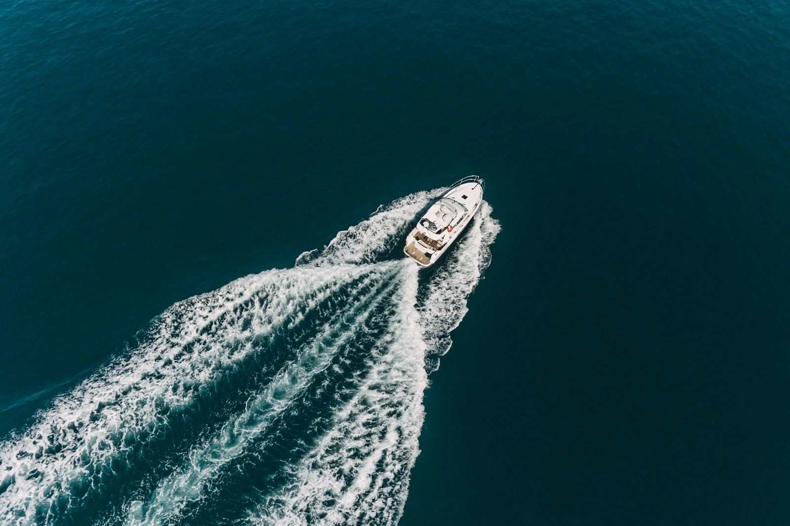

Vaša vlastita ruta po Jadranu
S unajmljenim brodom Vi odlučujete gdje ćete stati i koliko ćete ostati. Pula je dobro polazište: zaštićene uvale, obližnji otoci i more koje je većinu dana mirno.
- Manji brodovi: dozvola nije potrebna, a njima se lako upravlja
- Snažniji brodovi: potrebna je važeća dozvola za upravljanje brodom
- Nemate dozvolu? Skiper preuzima upravljanje i poznaje mirna mjesta
- Prsluci za spašavanje, sigurnosna oprema i kratke upute uključeni su u cijenu

Kamo možete ići
Nacionalni park Brijuni
Otoci s mora, vlastitim tempom.
Rt Kamenjak
Skrivene uvale oko južnog vrha Istre.
Uvale bez ceste
Plaže do kojih se ne može doći automobilom.
Mjesta za ronjenje s maskom
Stijene i bistro more za masku i peraje.
Kako to funkcionira
- 1
Recite nam svoj plan
Datum, trajanje, broj osoba i imate li dozvolu.
- 2
Primite ponudu
Predložit ćemo brod i poslati cijenu.
- 3
Upute
Sigurnosne upute i savjeti o ruti prije isplovljavanja.
- 4
Isplovite
Gorivo se obično plaća po potrošnji prilikom povratka.
Big game ribolov
Preporučeno razdoblje: od 10. srpnja do 31. listopada. Vrijeme polaska je fleksibilno, a određuje ga kapetan prema vremenskim prilikama i ribolovnoj sezoni.
Poludnevni izlet
Oko 5 sati. Privatni čarter za najviše 5 osoba. Lovi se plavoperajna tuna, lampuga, morski psi, skuša i komarča.
Cjelodnevni izlet
Oko 8 sati. Privatni čarter za najviše 5 osoba ili zajednički čarter za najviše 4 osobe. Lovi se plavoperajna tuna, lampuga, morski psi, a rijetko i sabljarka.